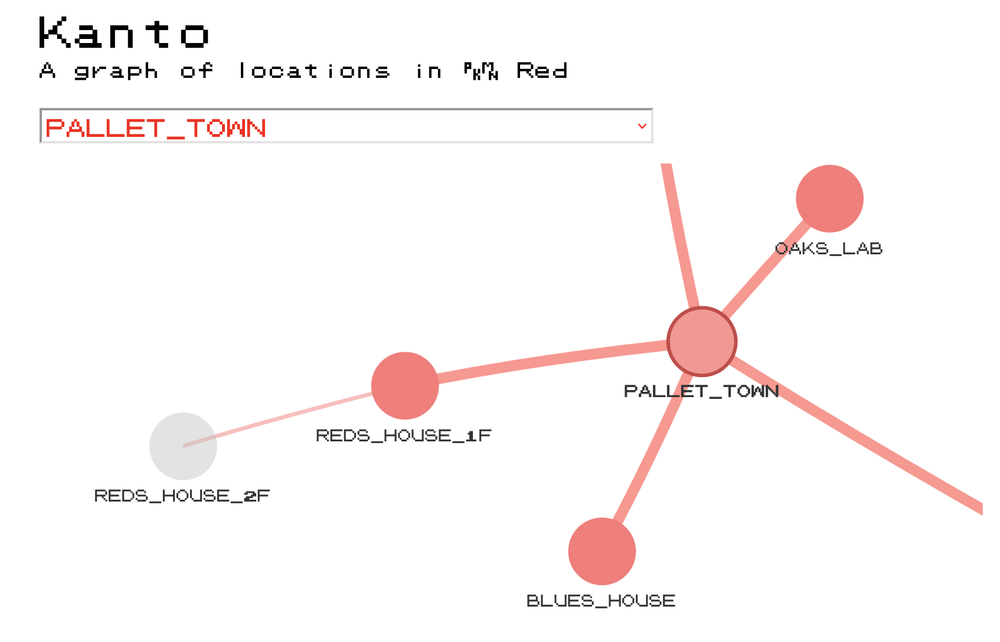

get_file_paths <- function(
dir = "~/Documents/data/pokered-master/data/maps",
type = c("objects", "headers")
) {
path <- file.path(dir, type)
list.files(path, pattern = ".asm$", full.names = TRUE)
}
get_warps <- function(objects_content) {
warp_string <- "warp_event "
warp_events <- objects_content[grepl(warp_string, objects_content)]
warp_events <- strsplit(warp_events, ", ")
warp_events <- lapply(warp_events, `[[`, 3) # third element is warps
unique(unlist(warp_events)) # vector of unique locations
}
get_connections <- function(headers_content) {
con_string <- "connection"
con_detected <- headers_content[grepl(con_string, headers_content)]
con_isolated <- lapply(con_detected, \(x) x[which(grepl(con_string, x))])
lapply(con_isolated, \(x) unlist(lapply(strsplit(x, ", "), `[[`, 3)))
}
create_names_lookup <- function(headers_content) {
headers_split <- strsplit(headers_content, ",")[[1]]
headers_split <- headers_split[1:2]
name_pair <- gsub("map_header ", "", trimws(headers_split))
setNames(name_pair[1], name_pair[2])
}
tl;dr
I extracted data from the disassembled code of Pokémon Red to create an interactive graph of the game’s locations and their connections. You can jump to the graph below.
Note
Coincidentally, a few days after posting this, someone posted to Hacker News a non-R implementation by Peter Hajas from a few years ago. I should’ve guessed!
Kanto
I wrote a while back about using the wonderful locator() function to extract coordinates from fictitious maps. In that example I used the Kanto region from the original Pokémon games.
Today I’m back with the same map1, but we’re going to be far more methodical and abstract: we’re going to extract data from the underlying game files to build a graph that describes all the locations and connections between them.
This is made possible by the ‘pret’ collaborative, who have reverse-engineered, or ‘disassembled’, a number of Pokémon games. This is interesting for digi-archaeological reasons2, but also for our frivolous purposes.
Assemble
To get a copy of the game’s3 disassembled code, go to the pret/pokered GitHub repo, click the ‘Code’ button, then ‘Download as zip’ and finally unzip the file on your computer.
We’re interested in two subfolders: /data/maps/objects/ and /data/maps/headers/. These both contain one file of Assembly code per named location in the game, like AgathasRoom.asm and Bikeshop.asm. We’ll be handling these as simple text files.
The ‘objects’ files contain information required to set up things like sprites and text for each location in the game. The example below is for the starting area: Pallet Town. For our purposes, we care about the warp_events, which indicate that you can step on a tile and be warped somewhere else. For example, standing on the door tile at tile location 5, 5 would warp you to REDS_HOUSE_1F, i.e. the first floor of the player’s house.
object_const_def
const_export PALLETTOWN_OAK
const_export PALLETTOWN_GIRL
const_export PALLETTOWN_FISHER
PalletTown_Object:
db $b ; border block
def_warp_events
warp_event 5, 5, REDS_HOUSE_1F, 1
warp_event 13, 5, BLUES_HOUSE, 1
warp_event 12, 11, OAKS_LAB, 2
def_bg_events
bg_event 13, 13, TEXT_PALLETTOWN_OAKSLAB_SIGN
bg_event 7, 9, TEXT_PALLETTOWN_SIGN
bg_event 3, 5, TEXT_PALLETTOWN_PLAYERSHOUSE_SIGN
bg_event 11, 5, TEXT_PALLETTOWN_RIVALSHOUSE_SIGN
def_object_events
object_event 8, 5, SPRITE_OAK, STAY, NONE, TEXT_PALLETTOWN_OAK
object_event 3, 8, SPRITE_GIRL, WALK, ANY_DIR, TEXT_PALLETTOWN_GIRL
object_event 11, 14, SPRITE_FISHER, WALK, ANY_DIR, TEXT_PALLETTOWN_FISHER
def_warps_to PALLET_TOWNSome terminology for graphs: the game’s locations are ‘nodes’ connected by common ‘edges’. So Pallet Town and Red’s House are nodes that share an edge.
Note that warping isn’t the only thing that creates an edge between two nodes. If we look in the ‘headers’ file for Pallet Town, you can see that some locations have a simple connection parameter: you can just walk north of Pallet Town to Route 1 (the road to Viridian City) or approach from the south along Route 21 (from Cinnabar Island). Yes, ‘routes’ connect two places, but routes themselves act as nodes in this demo.
map_header PalletTown, PALLET_TOWN, OVERWORLD, NORTH | SOUTH
connection north, Route1, ROUTE_1, 0
connection south, Route21, ROUTE_21, 0
end_map_headerThe headers file is useful to us in another way: it maps location names from the ‘PalletTown’ format (used in .asm filenames) to the ‘PALLET_TOWN’ format (as referenced within files). This knowledge will help us to better handle the data as we progress.
Prepare data
So let’s crack open the data and use some base R for corralling. Note that absolutely nothing here is optimised (or even written well in the first place), but regular readers will be used to that.
Prepare functions
To begin, I’ve made a few helper functions to extract and wrangle the data that we need:
get_file_paths()to return the filepaths for all the Assembly files (.asm) we needget_warps()to extract the warps in the text of each objects fileget_connections()to extract and wrangle all the connections from the headers filescreate_names_lookup()to map the UpperCamelCase and SCREAMING_SNAKE_CASE name variants for each location
Click for function definitions.
Extract connections
Now down to business. We’ll read the text content of each headers file into a list, then name these elements using the SCREAMING_SNAKE_CASE name for each location.
headers_files <- get_file_paths(type = "headers")
headers_content <- lapply(headers_files, readLines)
headers_lookup <- unlist(lapply(headers_content, create_names_lookup))
names(headers_content) <- names(headers_lookup)Here’s how Pallet Town looks in this format:
headers_content["PALLET_TOWN"]$PALLET_TOWN
[1] "\tmap_header PalletTown, PALLET_TOWN, OVERWORLD, NORTH | SOUTH"
[2] "\tconnection north, Route1, ROUTE_1, 0"
[3] "\tconnection south, Route21, ROUTE_21, 0"
[4] "\tend_map_header" Now we can take these lines of text and extract the node pairs that have an edge due to a ‘connection’ between them.
conns <- get_connections(headers_content)
conns_df <- stack(conns)
conns_df <- conns_df[, c("ind", "values")]
names(conns_df) <- c("from", "to")
conns_df[["from"]] <- as.character(conns_df[["from"]])
head(conns_df) from to
1 CELADON_CITY ROUTE_16
2 CELADON_CITY ROUTE_7
3 CERULEAN_CITY ROUTE_24
4 CERULEAN_CITY ROUTE_5
5 CERULEAN_CITY ROUTE_4
6 CERULEAN_CITY ROUTE_9Extract warps
Similarly, we can get the warp data in a node-pair data frame as well. The first step is to read the text of each objects file into a list.
obj_files <- get_file_paths(type = "objects")
obj_names <- gsub(".asm", "", basename(obj_files))
obj_content <- lapply(obj_files, readLines) |> setNames(names(headers_lookup))
obj_content["PALLET_TOWN"]$PALLET_TOWN
[1] "\tobject_const_def"
[2] "\tconst_export PALLETTOWN_OAK"
[3] "\tconst_export PALLETTOWN_GIRL"
[4] "\tconst_export PALLETTOWN_FISHER"
[5] ""
[6] "PalletTown_Object:"
[7] "\tdb $b ; border block"
[8] ""
[9] "\tdef_warp_events"
[10] "\twarp_event 5, 5, REDS_HOUSE_1F, 1"
[11] "\twarp_event 13, 5, BLUES_HOUSE, 1"
[12] "\twarp_event 12, 11, OAKS_LAB, 2"
[13] ""
[14] "\tdef_bg_events"
[15] "\tbg_event 13, 13, TEXT_PALLETTOWN_OAKSLAB_SIGN"
[16] "\tbg_event 7, 9, TEXT_PALLETTOWN_SIGN"
[17] "\tbg_event 3, 5, TEXT_PALLETTOWN_PLAYERSHOUSE_SIGN"
[18] "\tbg_event 11, 5, TEXT_PALLETTOWN_RIVALSHOUSE_SIGN"
[19] ""
[20] "\tdef_object_events"
[21] "\tobject_event 8, 5, SPRITE_OAK, STAY, NONE, TEXT_PALLETTOWN_OAK"
[22] "\tobject_event 3, 8, SPRITE_GIRL, WALK, ANY_DIR, TEXT_PALLETTOWN_GIRL"
[23] "\tobject_event 11, 14, SPRITE_FISHER, WALK, ANY_DIR, TEXT_PALLETTOWN_FISHER"
[24] ""
[25] "\tdef_warps_to PALLET_TOWN" Then we can extract the warps. Note that some warps don’t explicitly take you back where you came from. Instead the instruction is to warp to the last location. We can remove this from our data, since LAST_MAP isn’t a literal location.
warps <- lapply(obj_content, get_warps)
warps <- lapply(warps, \(x) x[x != "LAST_MAP"]) # remove LAST_MAP
warps <- warps[lengths(warps) > 0]
warps_df <- stack(warps) # to data.frame
warps_df <- warps_df[, c("ind", "values")]
names(warps_df) <- c("from", "to")
warps_df[["from"]] <- as.character(warps_df[["from"]])
head(warps_df) from to
1 AGATHAS_ROOM BRUNOS_ROOM
2 AGATHAS_ROOM LANCES_ROOM
3 BRUNOS_ROOM LORELEIS_ROOM
4 BRUNOS_ROOM AGATHAS_ROOM
5 CELADON_CITY CELADON_MART_1F
6 CELADON_CITY CELADON_MANSION_1FCombine all node pairs
Now we can combine all the node pairs that share edges, whether by simple connections or warps. In this example we’re interested in combinations, rather than permutations, of node pairs4. This means that we can treat A→B and B→A as equivalent and simplify down to just A→B.
edges <- rbind(warps_df, conns_df)
edges <- edges[!duplicated(data.frame(t(apply(edges, 1, sort)))), ] # https://stackoverflow.com/a/50117582We also want a full list of the nodes, which will help us to label and filter them in the final visualisation.
nodes <- data.frame(id = unique(c(edges[["from"]], edges[["to"]])))
nodes <- nodes[order(nodes[["id"]]), , drop = FALSE]Visualise
Set up
The {visNetwork} package wraps the vis.js JavaScript library, which will help output an interactive HTML graph. We just need to feed it our nodes and edges and a bunch of configuration and styling options.
First some CSS to import a font that mimics the font used in the game5.
@font-face {
font-family: 'pokemon-font';
src: url('resources/pokemon-font.ttf');
}While we’re dealing with font style, we can set up a function to build a CSS style string for when we need it in the visNetwork. Obviously we’ll use red as the accent colour, given the data is for the Red version of the game6.
poke_style <- function(size = 16, colour = "black") {
paste0(
"font-family:pokemon-font,sans-serif;",
"font-size:", size, "px;",
"color:", colour, ";"
)
}Now we can build the visNetwork object with vis* functions.
library(visNetwork)
graph <- visNetwork(
nodes,
edges,
width = "100%",
height = "600px",
main = list(text = "Kanto", style = poke_style(30)),
submain = list(
text = "A graph of locations in PKMN Red<br><br>",
style = poke_style()
),
footer = list(
text = "Source: Nintendo and Game Freak via the pret/pokered dissassembly project",
style = poke_style(8)
)
) |>
visEdges(
color = list(color = "#FF7777", highlight = "red", opacity = 0.5),
width = 3,
selectionWidth = 5
) |>
visNodes(
color = "#FF7777",
font = list(face = "pokemon-font", size = 14),
borderWidth = 0,
borderWidthSelected = 3,
) |>
visOptions(
highlightNearest = TRUE,
nodesIdSelection = list(
enabled = TRUE,
main = "Select a location",
style = poke_style(colour = "red")
)
) |>
visLayout(randomSeed = 150) |>
visPhysics(
solver = "barnesHut",
barnesHut = list(springConstant = 0.1, gravitationalConstant = -10000)
)The graph
So here’s the final result:
graph
It can take a moment to load. You can select a node from the dropdown menu, scroll to zoom, and click on the nodes and edges themselves. The node labels will appear when you zoom in.
It’s interesting to see the simple radial networks around each city; the spaghetti and meatballs of Silph Co caused by all the warp tiles (also note its unused location); the long ‘tail’ from Victory Road through the Elite Four to the Hall of Fame; and the hand-like structure of the Safari Zone.
Of course, you could spend all day tweaking things like the physics of the relationship between each node, or you could replace each node an images of its in-game sprite. I’ve chosen to keep things relatively simple because it’s bed time and I need to go and count some Mareep.
Environment
Session info
Last rendered: 2024-01-13 09:56:18 GMTR version 4.3.1 (2023-06-16)
Platform: aarch64-apple-darwin20 (64-bit)
Running under: macOS Ventura 13.2.1
Matrix products: default
BLAS: /Library/Frameworks/R.framework/Versions/4.3-arm64/Resources/lib/libRblas.0.dylib
LAPACK: /Library/Frameworks/R.framework/Versions/4.3-arm64/Resources/lib/libRlapack.dylib; LAPACK version 3.11.0
locale:
[1] en_US.UTF-8/en_US.UTF-8/en_US.UTF-8/C/en_US.UTF-8/en_US.UTF-8
time zone: Europe/London
tzcode source: internal
attached base packages:
[1] stats graphics grDevices utils datasets methods base
other attached packages:
[1] visNetwork_2.1.2
loaded via a namespace (and not attached):
[1] digest_0.6.33 fastmap_1.1.1 xfun_0.41 fontawesome_0.5.2
[5] magrittr_2.0.3 knitr_1.45 htmltools_0.5.6.1 rmarkdown_2.25
[9] cli_3.6.2 compiler_4.3.1 rstudioapi_0.15.0 tools_4.3.1
[13] ellipsis_0.3.2 evaluate_0.23 yaml_2.3.8 rlang_1.1.3
[17] jsonlite_1.8.7 htmlwidgets_1.6.2Footnotes
Oh no! He’s running out of ideas!↩︎
Not to mention that you can mess about with modding the game, like adjusting the code to set Mew as one of the starter ’mons.↩︎
As a diehard Blue-version enjoyer, it pains me slightly that this is the Red version. Red is the bad guy! Blue is the good guy!↩︎
This wrangling was actually mildly trickier than I thought it was be and so I ‘borrowed’ from StackOverflow to save time.↩︎
I can’t actually remember where I got this exact font file from, but I know it’s available from free font sites.↩︎
Graphic design is my passion, etc. As a colourblind person, I’m just glad they didn’t release Red and Green versions simultaneously.↩︎
Reuse
CC BY-NC-SA 4.0